Original Image
t=250
t=500
t=750
Rishi Nath 2024
|
"a man wearing a hat" |
"an oil painting of a snowy mountain village" |
"a rocket ship" |
|
"a rocket ship" num_inference_steps=20 |
"a rocket ship" num_inference_steps=40 |
|
Original Image |
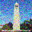
t=250 |
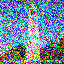
t=500 |
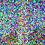
t=750 |
|
t=250 |
t=500 |
t=750 |
|
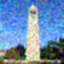
k=3 |
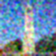
k=5 |
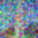
k=7 |
|
t=250 |
t=500 |
t=750 |
|
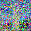
t=690 |
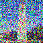
t=540 |
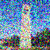
t=390 |
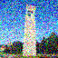
t=240 |
t=90 |
|
Original Image |
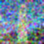
Guassian Denoised |
One-step Denoised |
Iteratively Denoised |
| 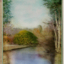 |
| i_start = 1 | i_start = 3 |
 i_start = 5
i_start = 5
|
i_start = 7 | i_start = 10 | i_start = 20 |
Original Image
|
| i_start = 1 | i_start = 3 | i_start = 5 | i_start = 7 | i_start = 10 | i_start = 20 | Original Image |
| i_start = 1 | i_start = 3 | i_start = 5 | i_start = 7 | i_start = 10 | i_start = 20 | Original Image |
| i_start = 1 | i_start = 3 | i_start = 5 | i_start = 7 | 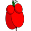 i_start = 10 | i_start = 20 | Original Image |
|
Original Image
|
 Mask
Mask
|
 Inpainting Target
Inpainting Target
|
Inpainted | Reverse Inpainted |
| Original Image | 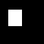 Mask | Inpainting Target | Inpainted |
| Original Image | 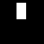 Mask | Inpainting Target | Inpainted |
| i_start = 1 | i_start = 3 | i_start = 5 | i_start = 7 | i_start = 10 | 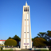 i_start = 20 |
Original Image
|
| i_start = 1 | i_start = 3 | i_start = 5 | i_start = 7 | i_start = 10 | i_start = 20 | Original Image |
| i_start = 1 | i_start = 3 | i_start = 5 | i_start = 7 | i_start = 10 | i_start = 20 | Original Image |
| "an oil painting of people around a campfire" | "an oil painting of an old man" |
| "a photo of a hipster barista" | "a photo of the amalfi cost" (sic) |
| "a lithograph of waterfalls" | "a lithograph of a skull" |
|
"a lithograph of a skull" "a lithograph of waterfalls" |
"an oil painting of an old man" "an oil painting of people around a campfire" |
"a photo of a dog" "a photo of the amalfi cost" (sic) |